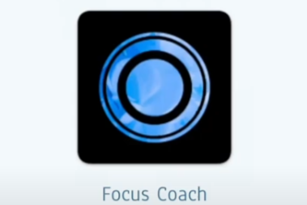
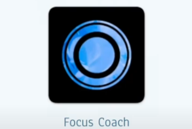
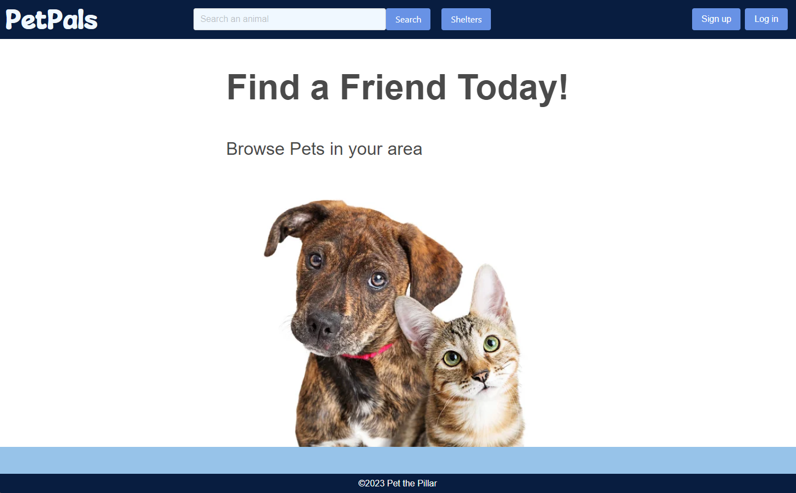
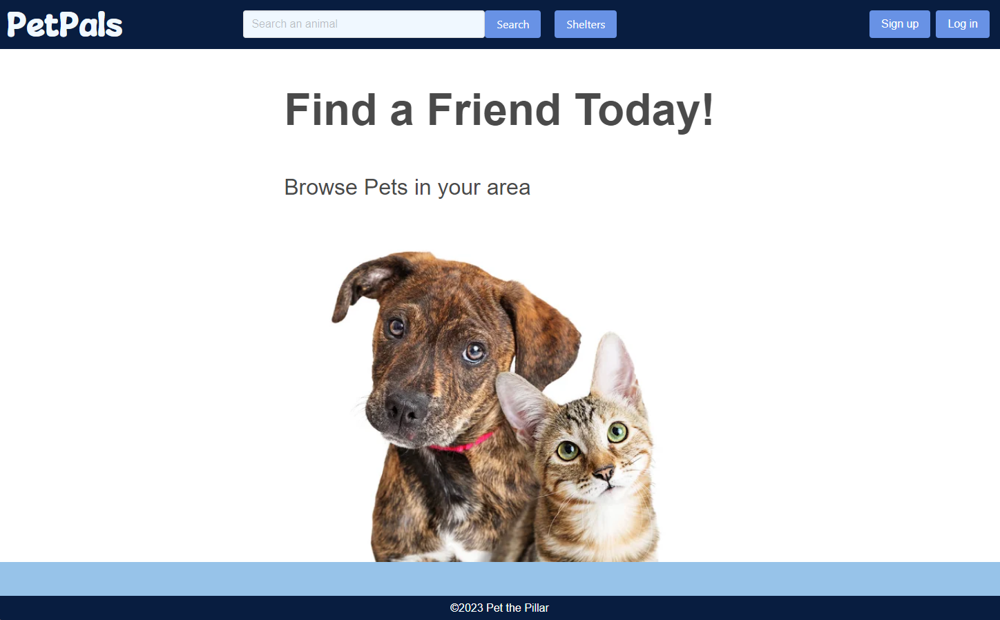
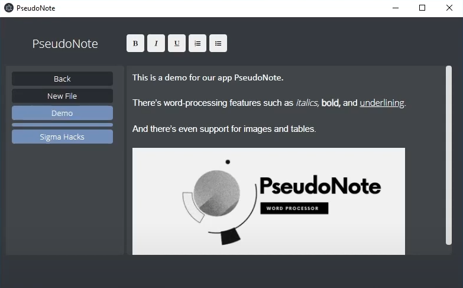
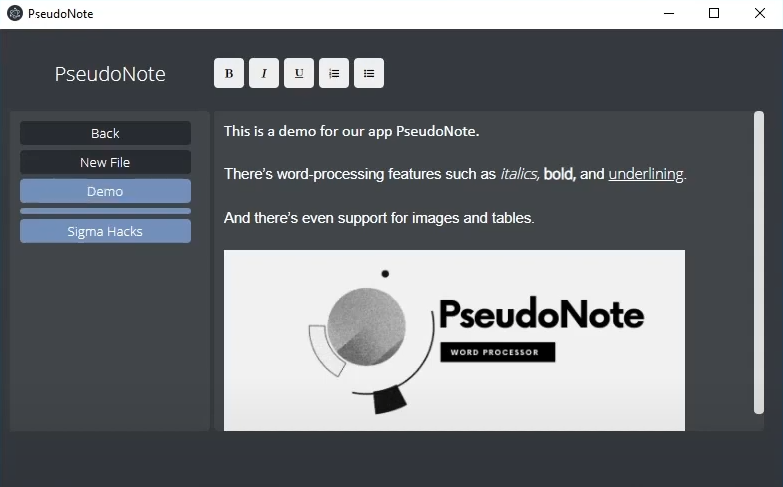
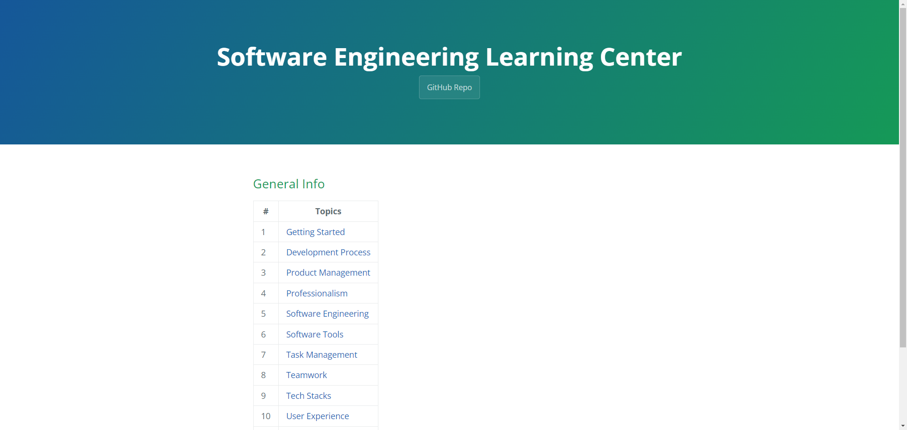
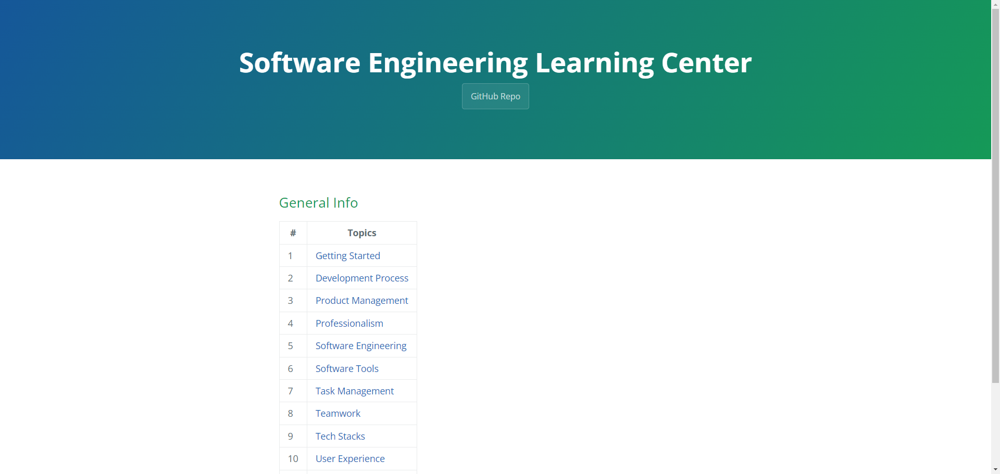
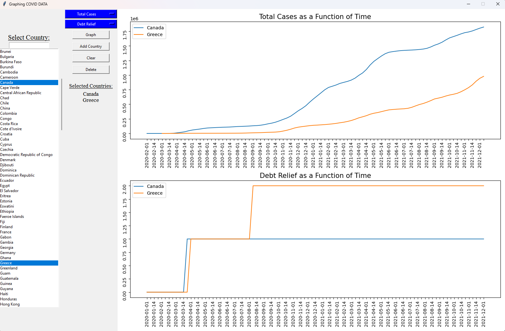
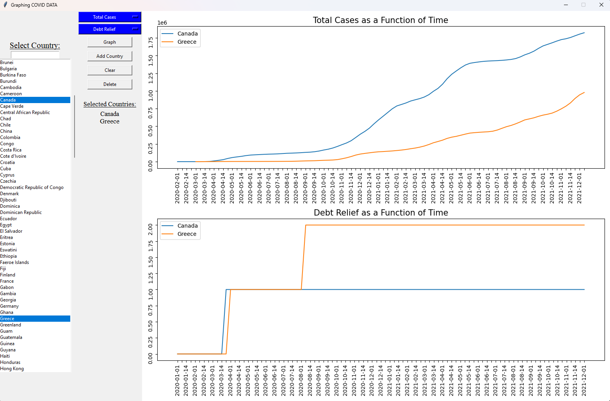

Hi, I'm David Zhou 👋
And I'm a 3rd year Computer Science Student at the University of Toronto, St. George. I'm passionate about software development and information security.
My work can be found in my Github 🔗
See my interests and experiences in my Resumé.
Learn about what I do
 

 


 

 

 
